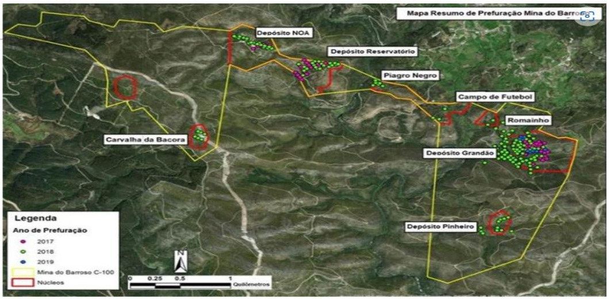

Paradoxos das energias renováveis: os significados psicossocioambientais de comunidades afetadas por atividades mineradoras: A exploração de lítio em Boticas, Portugal, como estudo de caso
Introdução
Associada à falácia capitalista de crescimento econômico ilimitado, a ampla utilização de resíduos fósseis como principal fonte de energia (atualmente, cerca de 85% da oferta global de energia é composta pela soma de carvão mineral, petróleo e gás natural, de acordo com a Agência Internacional de Energia – IEA, 2023) gerou os problemas de desigualdade e de pobreza que exibe o mundo contemporâneo e que carreou, como consequência, o aumento (praticamente exponencial nos últimos 15 anos) da emissão antrópica de GEE. Trata-se, portanto, de um macro contexto de emergência socioclimática, a qual está colocando cada vez mais em perigo a espécie humana e a própria vida na Terra (IPCC, 2022). Uma proposta alternativa, inexoravelmente, deve considerar uma transição energética efetivamente justa, a qual pode alicerçar toda uma mudança estrutural no modelo de desenvolvimento que, por sua vez, pode transformar as atuais relações sociais e econômicas, permitindo a manutenção da biodiversidade e, portanto, de nossa espécie e das demais espécies vivas na Terra (VELICU, 2022).
No entanto, imbrincada ao capitalismo financeiro, a transição energética aparentemente em curso, de fato, pouco ou nada tem de justa (TURIEL, 2022). Ocorre que tal transição tem se alicerçado especificamente na eletrificação (de modais de transporte, em especial), e não exatamente na promoção da produção e do consumo de energias potencialmente renováveis. E, frisa-se, não é o consumo de eletricidade a parcela do consumo energético mais relevante no contexto da matriz energética mundial. Neste sentido, o foco da transição energética na eletrificação não está permitindo uma necessária transição mais ampla dos sistemas de produção e consumos de energia. Poder-se-ia inferir, neste contexto, que este tipo de transição energética é insuficiente e chegou tarde demais ao ponto de evitar a intensificação das mudanças climáticas e de seu mais proeminente fenômeno causador, o aquecimento global (TURIEL, 2022; MARQUES, 2023). Ou seja, a partir da transição energética (lentamente) em curso provavelmente não há de ser possível, tal como explicita o Artigo 2º da Convenção-Quadro das Nações Unidas sobre a Mudança do Clima, “estabilizar as concentrações de gases de efeito estufa na atmosfera num nível que impeça uma interferência antrópica perigosa no sistema climático. Esse nível deverá ser alcançado num prazo suficiente que permita aos ecossistemas adaptarem-se naturalmente à mudança do clima e que assegure que a produção de alimentos não seja ameaçada e que permita ao desenvolvimento econômico prosseguir de maneira sustentável” (CQNUMC – UNFCCC, 1992).
Outrossim, diante de preceitos biocivilizatórios e/ou sob a égide de básicos princípios de ética universal, sob hipótese alguma uma transição energética que dependa da extração, produção e beneficiamento de metais contidos em minerais eventualmente raros na Crosta Terrestre (ou seja, de uma mineração intensiva e, portanto, tipicamente impactante ao ambiente) pode ser considerada como sendo justa. Inúmeras partes metálicas contidas, por exemplo, nas atuais baterias elétricas dos “sustentáveis” veículos particulares elétricos ou híbridos dependem, visceralmente, da mineração de cobalto na República Democrática do Congo (RDC). Urge ressaltar, neste contexto, que dezenas de milhares de trabalhadores, incluindo cerca de 40.000 crianças, diuturnamente, labutam nas minas de cobalto da RDC e sem o uso de adequados equipamentos de segurança (Equipamento de Proteção Individual – EPI), sem salários minimamente dignos e direitos trabalhistas (AMNISTIA INTERNACIONAL DE PORTUGAL, 2023).
Destarte, para pleno cumprimento do vigente Acordo de Paris, a transição energética em curso (e apresentada como solução ideal, por exemplo por grandes produtoras globais de veículos elétricos, como a Tesla ou a BYD) tende a significar num acintoso aumento na demanda global por determinados metais cuja mineração a montante é extremamente impactante ao ambiente, à biodiversidade e aos trabalhadores das minas a céu aberto ou nas lavras subterrâneas. Eis, neste contexto, as estimativas da IEA (2021) diante da demanda atual: 40% a mais de cobre e metais de terras raras; 90% a mais de lítio; 60-70% a mais de cobalto; e 60-70% a mais de níquel.
Uma avaliação mais ampla e coerente a respeito da transição energética em voga deve cotejar, para além dos impactos socioambientais associáveis à mineração anteriormente mencionada (também correlata, por exemplo, à produção de inúmeras partes metálicas das turbinas e das pás eólicas ou dos diversos componentes a base de metais das usinas solares fotovoltaicas), a dependência em relação aos combustíveis fósseis nestes processos minerários e questões nada solucionadas em termos de geopolítica. De fato, a mineração de cobre, cobalto ou de lítio dependem, de modo contendente, do emprego de combustíveis fósseis. Todo o transporte destes metais necessários à transição energética (e a sua expansão), por exemplo, requer amplas quantidades de óleo Diesel. A energia elétrica requerida nos processos produtivos minerários não é produzida tipicamente em usinas solares ou eólicas, mas sim, por exemplo e no caso da Europa) em tradicionais e tipicamente poluentes usinas termelétricas a carvão mineral ou gás natural. Exemplos diversos poderiam ser mencionados nestes mesmos contextos.
Outra questão problemática inerente a esta transição energética e que não é usualmente mencionada pela mídia corporativa e mesmo analisada e debatida por parte da Academia, refere-se ao fato de que as principais reservas dos metais necessários e correlatos não se encontram, em geral, nos países desenvolvidos. Há, neste sentido, complexas questões vinculáveis à geopolítica internacional (e associáveis à competividade industrial e à segurança nacional) que tendem a obstaculizar um acesso mais amplo a tais reservas por parte do Norte Global, o qual usualmente expropria e usurpa os recursos naturais existentes no Sul Global. Mas, nem sempre isto é possível. Há, de fato, países em desenvolvimento e industrialmente (e belicamente) pujantes, como a China, que não se mostram interessados em exportar seus metais típicos requeridos pela transição energética em voga. É, portanto, uma evidente falácia considerar como ideal, suficiente ou justa a transição energética em curso. Intui-se tratar-se de caso global de greenwashing, particularmente considerando-se os interesses de grandes corporações financeiras envolvidas (e de práticas lobistas correlatas), a propalada transição como meio principal de enfrentamento da crise socioclimática.
Para compreender a exploração do lítio (material tão necessário à transição energética, particularmente como metal constituinte das baterias para armazenamentos da eletricidade gerada em usinas solares e eólicas), seus impactos ambientais e a relação dos impactos da mineração sob o viés da Psicologia Ambiental, é fundamental à priori, compreender as questões atuais relacionadas aos impactos da mineração do lítio na transição energética e crise climática, além de geopolítica, relações de poder e território, bem como, a Agenda 2030 e os principais objetivos do desenvolvimento sustentável das Nações Unidas envolvidos neste este cenário. Nessa discussão em especial, é importante entender o conceito de Psicologia Ambiental e aspectos como subjetividade e identidade nesta conjuntura, a partir da apresentação de alguns territórios (espaços individuais ou coletivos) que experenciam a mineração do lítio.
Segundo Simões et al. (2023) uma transição energética que dependa da extração, produção e beneficiamento de metais contidos em minerais (eventualmente) raros na crosta terrestre (ou seja, metais associáveis a uma mineração intensiva e, portanto, tipicamente impactante ao ambiente) não pode ser considerada justa.
Os mesmos autores enfatizam que a transição energética implica em impactos socioambientais relacionados à mineração, e a exploração de lítio nesse cenário, depende do emprego de combustíveis fósseis; e o transporte dos metais em geral requer uso significativo de combustível (óleo diesel); e somada à esta questão, a energia elétrica utilizada com os processos de mineração de metais, ainda requer usinas termelétricas a carvão mineral ou a gás natural, altamente poluentes.
Neste sentido, percebe-se que transição energética não é justa, tampouco capaz de mitigar a crise socioclimática. Para este processo ser justo, ter-se-ia uma mudança de paradigma na transição energética que contemplasse energias renováveis realocadas para usos culturais e técnicos mais locais, mais próximos da demanda energética, com uma política pública voltada à implementação de ações outras, que estivessem atreladas aos Objetivos de Desenvolvimento Sustentáveis das Nações Unidas, visando uma mudança na geopolítica internacional.
Além disso, inserir nesse conjunto de ações, estratégias eficazes que diminuam riscos e desastres socioambientais, comprometendo a biodiversidade.
A Psicologia neste contexto, com sua ênfase no compromisso social, muito pode contribuir na gestão integral de possíveis riscos, emergências e desastres, envolvidos muitas vezes, neste cenário.
Partindo desses pressupostos, entende-se que os impactos da exploração do lítio na transição energética, vão além de impactos ambientais, mas trazem impactos afetivos, culturais e outros nas comunidades destas regiões.
Segundo Gonçalves (2007), a Psicologia Ambiental explica este fenômeno, pois, tem por objeto de estudo o significado simbólico do espaço e a compreensão dos processos psicossociais derivados das relações e interações das pessoas, grupos, comunidades e seus entornos socio físicos. (apud JERÔNIMO e SOUZA, 2015. p.1)
De acordo com Barreto et al (2020), no dia 5 de novembro de 2015, o rompimento da barragem de rejeitos de Fundão em Mariana-MG (Brasil) de propriedade das mineradoras Samarco, Vale e BHP Billiton destruiu comunidades e contaminou o Rio Doce, sendo reconhecido como o maior desastre/crime socioambiental do Brasil.
E os mesmos autores, evidenciam que que há uma constante busca por tentar recriar o sentimento de comunidade que se mostra principalmente na manutenção do vínculo com o espaço físico devastado e na tentativa de recriar o mesmo no espaço onde será feito o reassentamento, em decorrência da destruição causado pela lama, com mortes de trabalhadores da empresa e habitantes das comunidades afetadas, despejo de populações; devastação de localidades e consequente desagregação dos laços sociais das comunidades; destruição de áreas agrícolas; destruição vegetação nativa da Mata Atlântica; mortalidade da biodiversidade aquática e da fauna terrestre; sensação de perigo e desamparo da população, e outros.
Desta forma, justifica-se a importância deste trabalho que implicará em realizar um resgate conceitual da Psicologia Ambiental, buscando reflexões e compreender sob esta perspectiva a exploração do lítio e seus impactos ambientais, buscando respostas às situações como: Como é sentida pelas comunidades desses espaços a relação identidade e território? Quais impactos ambientais a exploração do lítio traz para o ambiente no aspecto afetivo da relação vínculo, pertencimento e território? Como são entendidas as questões das oportunidades propiciadas através da exploração do lítio, no sentido da possibilidade de implantação de cidades e comunidades sustentáveis e as relações de poder? Há angústia os outros fenômenos psicológicos atrelados junto às populações locais envolvidas nesses processos? Quais as resistências e luta da população local neste enfrentamento?
Sob a égide de tais considerações, o presente trabalho analisa os impactos socioambientais associáveis à exploração e produção de lítio pela perspectiva da Psicologia Ambiental. Objetiva-se apresentar a conceitualização de Psicologia Ambiental e suas interfaces diante deste processo minerário, de modo a evidenciar os significados psicossocioambientais inerentes às comunidades locais afetadas pela mineração de lítio. Como estudo de caso, analisa-se o projeto de mineração de lítio na área da Mina do Barroso, Município de Boticas, norte de Portugal.
Materiais e Métodos
Desenvolver uma pesquisa, utilizando a revisão bibliográfica sistemática, implica desenvolver um processo, que se remete ao levantamento bibliográfico, por meio da internet e acervos, utilizando o documento como fonte de informação e/ou embasamento, ou seja, adotando o documento como diretriz da pesquisa. Outrossim, por este estudo ter como característica principal o caráter descritivo, foi desenvolvida uma pesquisa de fontes documentais, e em especial, sobre a importância dos impactos ambientais associáveis à exploração de lítio com o objetivo de analisar sob a perspectiva da Psicologia Ambiental, compreendendo os significados psicossocioambientais das comunidades locais relacionadas às atividades mineradoras, ou seja, adotando uma revisão bibliográfica por meio da Internet e no acervo da Scielo (Scientific Electronic Library Online), na primeira fase, utilizando-se dos termos Exploração de lítio; Psicologia Ambiental e Significados Psicossocioambientais, no período dos últimos 5 anos (2019 à 2023), com exclusão de artigos em idioma estrangeiro, e inclusões de artigos na internet e outros acervos se deu em virtude da etapa complementar, referente à apresentação do Município de Boticas, localizado no norte de Portugal, no que tange à exploração do lítio e aspectos relacionados à impactos ambientais; e adotando para a segunda fase, a construção do referencial teórico e/ou desenvolvimento do tema, bem como, conclusão.
Resultados e Discussão
Mineração de lítio na área da Mina do Barroso, em Botica, Portugal: Um estudo de caso
Conforme contexto precedente apresentado, o lítio é um material versátil e com utilidade em várias áreas como na produção de polímeros, vidros e graxas, sendo uma de suas principais a sua utilização em baterias e em produtos eletrônicos.
Desta forma, considerando o contínuo desenvolvimento tecnológico, é natural que surja uma maior demanda por componentes eletrônicos e, por conseguinte, por sua matéria-prima. Neste sentido, a procura pelo lítio e locais de onde possa extrair torna-se necessária para atender a demanda da indústria e da sociedade, no que se refere em especial baterias de celulares e outros eletrônicos, bem como, para baterias de veículos elétricos.
Segundo Silva et al. (2021), a mineração é um ramo de atividade de alta complexidade, que possui particularidades que variam conforme o mineral extraído (ferro, ouro, bauxita etc.), a tecnologia da extração (manual ou industrializada), a regulamentação da atividade, dentre outros critérios. A instalação de uma empresa desse segmento, em determinado município, pode criar na população expectativas que muitas vezes não são atendidas.
Neste sentido, é um engano pensar que as atividades mineradoras irão diminuir a pobreza local ou regional, e muitas vezes o crescimento econômico aumenta a desigualdade socioespacial e muitas vezes promovem conflitos. Com esta contextualização nos debruçaremos a refletir sobre Boticas- Portugal, como estudo de caso.
Segundo Welectric (2024), a empresa de mineração britânica Savannah Resources, dona do projeto da mina de lítio do Barroso, em Boticas, distrito de Vila Real, deu conta, em comunicado ao mercado, da descoberta de “amplas zonas de mineralização de lítio de alto teor” num dos depósitos (denominado “Pinheiro”) que faz parte da futura mina a céu aberto no norte de Portugal. A empresa refere que se trata das “interceptações de lítio de mais alto grau até ao momento” naquele que é o “maior depósito de espodumena de lítio da Europa”.
Acrescentam ainda que, a empresa já perfurou mais de 30.000 metros, com as sondagens iniciais e que a empresa Savannah Resources quer explorar uma mina que tem duração estimada em 17 anos de duração e 593 hectares. Entretanto, existe contra do Ministério Público e população, já que há indícios que demonstram que os argumentos da população contra a mina são totalmente legítimos, e portanto, há resistência da população, em virtude dos impactos prováveis à Região de Boticas (patrimônio agrícola mundial desde 2018 pela UNESCO).
Segundo o jornal português Público (2024), a empresa Savannah Resources iniciará exploração de lítio em 2026, no patrimônio mundial da agricultura. Entretanto, movimentos ativistas ambientais – associações ambientalistas existem na contramão desse movimento e grupos se organizam para impedir máquinas entrarem em terrenos baldios por se sentirem “usurpados”. A empresa prevê a criação de 300 empregos diretos e 2000 indiretos, mas a que preço para a população?
Figura 1: Localização depósito Pinheiros – Portugal / Imagem: Savannah Resources  Fonte: Disponível em: Lítio de alto teor encontrado em Boticas, mas oposição ao projeto continua (welectric.pt) - Localização do depósito Pinheiro. Imagem: Savannah Resources.
Portugal e Brasil no contexto da exploração do lítio
Brasil e Portugal têm o objetivo de expandir sua exploração de lítio para atender às demandas da transição energética, e em abril de 2023 firmaram acordo na área de energia e geologia.
Segundo Santos (2023), em Portugal o lítio é explorado principalmente para fins cerâmicos e vidreiros , sendo o país detentor das maiores reservas de lítio conhecidas na União Europeia. O Brasil por sua vez, possui uma indústria do lítio mais estabelecida, com a Companhia Brasileira de Lítio (CBL), que iniciou suas operações em 1991 para suprir o mercado nacional de derivados desse mineral. Historicamente, a CBL tem se destacado na exploração de lítio nos municípios de Araçuaí e Itinga, localizados no Vale do Jequitinhonha, em Minas Gerais. Outros estados brasileiros como, Ceará, Rio Grande do Norte e Paraíba, também exploram o lítio, como recurso.
As instâncias e/ou grupos responsáveis de ambos os países, neste acordo propõem explorar oportunidades nas áreas de geologia e minas, incluindo a atração de investimentos para pesquisa, ampliação da produção mineral e capacidade produtiva em etapas de processamento de lítio, produção de componentes e baterias e estudos prévios sobre as condições de infraestrutura e logística regional.
Desde então, Portugal voltou-se para várias pesquisas e projetos com empresas detendo os direitos de exploração, sujeitos à aprovação da Avaliação de Impacto Ambiental; e concomitantemente desde 2019, a exploração do lítio se tornou polêmica, e neste contexto, a população e organização ambientalista se mobilizou, no que tange aos potenciais impactos que a mineração de lítio poderia causar em regiões predominantemente agrícolas.
No âmbito brasileiro, no Vale do Jequitinhonha, as discussões giram em torno que as riquezas geradas na região, permaneçam na região, e para tal, importante que se estabeleçam políticas públicas que assegurem essa premissa, e não meramente exportadores de matérias- primas com baixo valor agregado.
Em ambos os países, há pouco estudo sobre os impactos socioambientais desta mineração, e assim, é importante entender que embora a mineração possa trazer crescimento econômico, é imprescindível entender questões geopolíticas, inclusive de esfera mundial, para além da questão dos governos de Brasil e Portugal ampliarem os estudos quantos aos impactos ambientais, mas também na compreensão quanto aos sistemas de energia renovável, que apesar de pretenderem ser “mais limpos”, podem apresentar suas próprias injustiças e impactos.
Psicologia Ambiental
Segundo Pinheiro, et al. (2014) apud Feitosa et al. (2018), Psicologia Ambiental pode ser compreendida como o estudo das inter-relações entre o ser humano e seu ambiente socio- físico, considerando-se aí os aspectos individuais e coletivos que os perpassam.
De acordo com Pinheiro (2002), na atualidade, os estudos no campo do compromisso ambiental buscam uma maior contextualização, à medida que incluem bases culturais e históricas dos valores das pessoas, aspectos afetivos, ideologias políticas e visões do mundo (CFP, 2021, p. 55).
Gabriel Moser (2005), como grande representante da psicologia ambiental, apresenta uma relação direta entre as condições de se pensar o ambiente, e a própria psicologia ambiental com a psicologia social. Seguindo o seu pensamento, a questão do ambiente e sua proteção e defesa, no sentido do cuidado efetivo, onde o ser humano se faz presente, se coloca como um grande desafio, em desenvolver abordagens mais consistentemente.
Subjetividade, Identidade e Território
Quando falamos em território, falamos de suas especificidades, mas não apenas espacial. Nele existem as pessoas que o constituem, e, portanto, modos de viver, de se relacionar, ser e estar no mundo, que afeta e influencia os processos de subjetivação e identidade.
Os territórios constituem-se como espaços vivenciais complexos, posto que abrangem tanto um espaço físico e geográfico quanto as experiências e as histórias de cada indivíduo e dos coletivos a que ele pertence. O território envolve, portanto, tempo e espaço, memória, afetos e processos identitários, caracterizado por sua dinamicidade, afetada por dimensões como trabalho e tecnologia (Ferraz et al., 2017; Santos, 1992).
Ciampa (1987), considera a identidade como uma questão política, já que além das questões de cada indivíduo, estão as condições sociais e institucionais onde esta atividade ocorre, num processo dialético, na interação social, na concepção materialista histórica.
Segundo Moré & Crepaldi (2012) pode-se definir redes sociais como um conjunto de relacionamentos interpessoais significativos para um sujeito, uma família ou uma comunidade, do ponto de vista do suporte social, material e emocional, que constitui rede de apoio e compromisso mútuos, conforme as situações vivenciadas no cotidiano, fortalecendo os recursos pessoais e sociais para o enfrentamento das situações postas.
Segundo Pacheco & Bomfim (2019), na relação dialética pessoa-ambiente, entende-se que todo ambiente provoca emoções e afeta o modo de agir das pessoas (Bomfim, Delabrida, & Ferreira, 2018), sendo a compreensão dessa afetividade um indicador de ação de como habitante se implica na comunidade, na sociedade, repercutindo em uma ética cidadã (Bomfim, 2010).
Desta forma, percebe-se que ser o humano projeta-se sobre o espaço que se apropria, produzindo um sentimento de pertencimento e identificação entre sujeito e espaço que reflete no modo de vida peculiar e singular daqueles que o habitam, transitando por gerações.
Considerando os pressupostos acima, ao correlacionarmos às comunidades mineradoras, muitas vezes, existem resistências em mudanças em implantação de mineradoras, por uma série de fatores, já que se estabelecem outras formas de viver e de relacionar, o que pode estar atrelado ao medo de uma possível desapropriação, que afeta o sentimento de pertença.
Segundo Jerônimo (2015), este sentimento está associado à apropriação e identidade do sujeito. O impacto causado pela possibilidade da mineração gera na comunidade um reforço nos laços mantidos ao seu lugar de origem, envolto, portanto, por uma série de emoções.
A partir dessas considerações, Sawaia (1995), aponta que a relação do ser humano com o ambiente é de ordem física e simbólica, e portanto, os espaços são multidimensionais e compartilham da mesma materialidade e subjetividade que os seres humanos. Assim, na identificação com os espaços o sujeito pode construir sua subjetividade, significando a si.
Segundo Barreto et. al (2020), as relações interpessoais são a um só tempo centrais à identidade dos indivíduos, ao seu sentimento de pertença e também à sua plena realização, que é fruto da inserção em um contexto em que “são todos chamados pelo nome”, sendo percebidos como sujeitos autônomos e aptos a se posicionar e serem ouvidos pelos demais de forma democrática e singular. Ao ver sua individualidade e seu discurso reconhecidos e validados, o sujeito constrói a si e à comunidade, construindo também a cidade e a sociedade (SARRIERA & SAFORCADA, 2010).
Para Scavacini (2024), a saúde transcende a mera ausência de doença, abrangendo o bem-estar físico, mental e social tanto do indivíduo quanto da comunidade. É importante ressaltarmos que não existe saúde sem saúde mental. Neste sentido, a mesma autora salienta que, após situações de emergências e desastres, a preocupação imediata gira em torno de garantir a segurança e prestar assistência. Mas e depois, quando as perdas se tornam palpáveis e a realidade se apresenta de maneira implacável - as feridas invisíveis — aquelas que afetam o bem-estar – são frequentemente subestimadas e desconsideradas.
Conclusão
A partir do levantamento bibliográfico a respeito dos impactos ambientais associáveis à exploração de lítio em Boticas, sob a perspectiva da Psicologia ambiental, observou-se que esta atividade mineradora, bem como em regiões de mineração localizadas no Sul Global, não pode ser caracterizada como um processo representativos de justiça socioambiental e de justiça socioeconômica e, de modo correlato, não corrobora para uma transição energética (efetivamente) justa. A amplitude e a magnitude das negativas externalidades psicossocioambientais das comunidades locais afetadas por tais empreendimentos minerários corrobora para a compreensão de que, em última instância, não é aceitável mitigar as mudanças climáticas pela via de uma transição energética nitidamente injusta – e isto na medida em que a mineração do lítio, material tão necessário às baterias para armazenamentos da eletricidade geradas em usinas solares e eólicas (por exemplo), em geral significa ampla perda de qualidade de vida, com potencias riscos à saúde física e mental de comunidades locais.
Primeiramente, entende-se que embora as empresas envolvidas como ganhadoras nas licitações do processo de mineração promovam crescimento e/ou desenvolvimento local, com a geração/abertura de inúmeras vagas de empregos na fase de implantação, decorrente das construções de estradas para transportes e mesmo os diretos relacionados à própria mineração, por outo lado, traz inúmeros impactos ambientais, visuais nos terrenos envolvidos, alterações e contaminação no solo, muitas vezes considerados patrimônios agrícolas, qualidade das águas com resíduas industriais, sociais, econômicos e também, subjetivos, relacionados ao que tange à aspectos da Psicologia Ambiental, que refere-se diretamente à território, identidade e sentimento de pertencimento ao espaço geográfico local, envolto por memórias e construção singulares de um modo de viver e de cultura; o que muitas vezes quando frente à possibilidade de rompimentos pode levar à importantes conflitos de identidade às comunidades locais.
Neste sentido, pensar em transição energética é pensar também além dos impactos ambientais, é pensar nos impactos afetivos e na possível perda dos territórios onde se constroem formas de viver. E que não se pode implantar formas de extração de minérios numa “falsa” transição energética, a qualquer preço, que comprometa o território de origem das comunidades locais, e muitas vezes, sem levar à estas que a geração destas riquezas, revertam em benefícios para a própria região, e somente fruto de um sistema capitalista com meta exclusiva em aspectos econômicos, para atender a indústria de eletrônicos no caso do lítio em especial.
Para tanto, a discussão de geopolítica, impactos ambientais, mudança climática, possíveis desastres ambientais advindos de transição energética que não esteja pautada pelas energias renováveis e/ou alternativas e em estudos de riscos e impactos, não se estabelecem de forma efetiva e consciente. E, neste processo, estão implícitos os aspectos emocionais e simbólicos das comunidades locais na relação território, ambiente, subjetividade, identidade e pertencimento, podendo trazer danos irreparáveis nas formas de viver, e causando vulnerabilidades e injustiças sociais, bem como, na saúde mental.
A partir do levantamento bibliográfico a respeito dos impactos ambientais associáveis à exploração de lítio em Boticas, sob a perspectiva da Psicologia ambiental, observou-se que esta atividade mineradora, bem como em regiões de mineração localizadas no Sul Global, não pode ser caracterizada como um processo representativos de justiça socioambiental e de justiça socioeconômica e, de modo correlato, não corrobora para uma transição energética (efetivamente) justa. A amplitude e a magnitude das negativas externalidades psicossocioambientais das comunidades locais afetadas por tais empreendimentos minerários corrobora para a compreensão de que, em última instância, não é aceitável mitigar as mudanças climáticas pela via de uma transição energética nitidamente injusta – e isto na medida em que a mineração do lítio, material tão necessário às baterias para armazenamentos da eletricidade geradas em usinas solares e eólicas (por exemplo), em geral significa ampla perda de qualidade de vida, com potencias riscos à saúde física e mental de comunidades locais.
Referências
AMNISTIA INTERNACIONAL DE PORTUGAL. (2023). Trabalho infantil e exploração laboral na República Democrática do Congo alimentam a produção mundial de baterias de telemóveis e carros.
BARRETO, L.C. ROSA, D. D. da. MAYORGA, C. Comunidades sujas de lama: da destruição à ressignificação e a resistência em Mariana/ MG. Universidade Federal de Minas Gerais, Belo Horizonte/MG, Brasil, 2020.
CIAMPA, A. C. (1987). A Estória do Severino e a História da Severina: um ensaio de Psicologia Social. São Paulo: Brasiliense.
CONVENÇÂO – QUADRO DAS NAÇÕES UNIDAS SOBRE A MUDANÇA DO CLIMA - CQNUMC – UNFCCC – United Nations Frawework Convention on Climate Change, 1992.
CONSELHO FEDERAL DE PSICOLOGIA (BRASIL). Referências técnicas para atuação de psicólogas (os) na gestão integral de riscos, emergências e desastres / Conselho Federal de Psicologia, Conselhos Regionais de Psicologia, Centro de Referência Técnica em Psicologia e Políticas Públicas. — 1. ed. — Brasília: CFP, 2O21.
FEITOSA, M. Z de S. SOUSA, L.C.A. PAZ, A.F.C. et al. Afetividade, território e vulnerabilidade na relação pessoa-ambiente: um olhar ético político. Fractal: Revista de Psicologia, v. 30, n. 2, p. 196-203, maio-ago. 2018.
IEA – International Energy Agency. (2021). The Role of Critical Minerals in Clean Energy Transitions. World Energy Outlook Special Report.
IEA – INTERNATIONAL ENERGY AGENCY. (2022). World Energy Outlook 2022.
IPCC – INTERGOVERNMENNTAL PANELON CLIMATE. (2022). Climate Change 2022: Impacts, Adaptation, and Vulnerability. Contribution of Working Group II to the Sixth Assessment Report. Cambridge University Press.
JERÔNIMO, R. N. T. & SOUZA. Psicologia ambiental: um estudo acerca da resistência frente à mineração em Içara, SC. R. V. C., 2015.
MARQUES, L. (2023). O Decênio Decisivo: propostas para uma política de sobrevivência. São Paulo: Elefante.
MORÉ, C. L. O. & CREPALDI, M. A. (2012). O mapa de rede social significativa como instrumento de investigação no contexto da pesquisa qualitativa. Nova Perspectiva Sistêmica, 43, 84-98.
MOSER, G. A Psicologia Ambiental: competência e contornos de uma disciplina. Comentários a partir das contribuições. Psicol. USP, São Paulo, v. 16, n. 1-2, p. 279-294, 2005.
PACHECO, F.P. BOMFIM, Z.A.C. Afetos e implicações psicossociais do viver sob ameaças de desapropriação do espaço. Psicologia & Sociedade, 33, e249219. Universidade Federal do Ceará, Fortaleza/CE, Brasil.
PÚBLICO. Boticas prevê começar mineração de lítio em 2026 | Lítio | PÚBLICO (publico.pt). Portugal: 28/05/2024. Disponível em: Boticas prevê começar mineração de lítio em 2026 | Lítio | PÚBLICO (publico.pt).
PÚBLICO. Encontro de activistas saiu da urbe para alertar contra “falsa transição energética” | Reportagem | PÚBLICO (publico.pt). Portugal: 07/04/2024. Disponível em: Encontro de activistas saiu da urbe para alertar contra “falsa transição energética” | Reportagem | PÚBLICO (publico.pt).
SANTOS, E. Aspectos sociais da mineração de lítio: Brasil e Portugal firmam acordo estratégico para enfrentar desafios globais. Jornal da USP, 19 de maio de 2023.
SAWAIA, B. B. O calor do lugar, segregação urbana e identidade. São Paulo em Perspectiva, São Paulo, v. 9, n. 2, p. 20-24, 1995.
SCAVACINI, K. SILVA, J. Prevenção do Suicídio em Emergências e Desastres Ambientais. Cartilha de prevenção do suicídio em emergências e desastres ambientais. Rio Grande do Sul. Instituto Alere, 2024.
SILVA, B.C da. FONSECA, J C de F. ROMAGNOLI, R.C. A “terra prometida”: práticas de gestão, trabalho na mineração e seus impactos nas relações familiares. Cadernos de Psicologia Social do Trabalho, 2021, v. 24, n. 2, p. 169-184.
SIMÕES, A.F. CARVALHO, M. B. de. PEREIRA, D.A.C. et al. O enfrentamento ainda possível da emergência socioclimática: novos horizontes biocivilizatórios. Revista Mosaicos Estudos em Governança, Sustentabilidade e Inovação, Curitiba, v. 5, n. 1, p. 143-161, 2023.
TURIEL, A. (2022). Sin energía: Pequeña guía para el Gran Descenso. Editora Alfabeto.
VELUCI, I.; BARCA, S. (2022). The Just Transition and its work of inequality. Sustainability: Science, Practice and Policy, 16(1).
WELECTRIC, Lítio de alto teor encontrado em Boticas, mas oposição ao projeto continua (welectric.pt). Disponível em: Lítio de alto teor encontrado em Boticas, mas oposição ao projeto continua (welectric.pt)